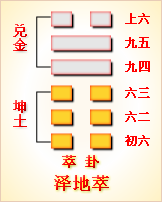

第四十五卦初六爻详解 第四十五卦六二爻详解 第四十五卦六三爻详解
第四十五卦九四爻详解 第四十五卦九五爻详解 第四十五卦上六爻详解
周易第四十五卦 萃 泽地萃 兑上坤下
萃：亨。王假有庙，利见大人，亨，利贞。用大牲吉，利有攸往。
彖曰：萃，聚也;顺以说，刚中而应，故聚也。王假有庙，致孝享也。利见大人亨，聚以正也。用大牲吉，利有攸往，顺天命也。观其所聚，而天地万物之情可见矣。
象曰：泽上於地，萃;君子以除戎器，戒不虞。
初六：有孚不终，乃乱乃萃，若号一握 为笑，勿恤，往无咎。象曰：乃乱乃萃，其志乱也。
六二：引吉，无咎，孚乃利用禴。象曰：引吉无咎，中未变也。
六三：萃如，嗟如，无攸利，往无咎，小吝。象曰：往无咎，上巽也。
九四：大吉，无咎。象曰：大吉无咎，位不当也。
九五：萃有位，无咎。匪孚，元永贞，悔亡。象曰：萃有位，志未光也。
上六：赍咨涕洟，无咎。象曰：赍咨涕洟，未安上也。
萃卦卦象，泽地萃卦的象征意义
萃卦，这个卦是异卦相叠，下卦为坤，上卦为兑。兑为泽、为水在上，坤为地、为顺在下，表明大地上的水汇聚在一起，形成泽，而泽水灌溉良田，可使禾木丛生，从而生出兴旺的景色。但是，水可以灌田有益收获，也可能会泛滥成灾，对这一点应该早做防备。
从另一个角度来看，兑为悦，坤为顺，又表明只要大地能顺着自然规律运动，就会使喜悦相继而来，使喜悦得到集聚。
萃卦位于姤卦之后，《序卦》中这样解释道：“物相遇而后聚，故受之以萃。萃者，聚也。”相遇之后，才有聚集、聚合。萃，是聚的意思。
《象》中这样解释本卦：泽上于地，萃;君子以除戎器，戎不虞。这里指出：萃卦的卦象是坤(地)下兑(泽)上，为地上有湖，四面八方的细流都源源不断汇入湖中之表象，象征着聚合;在这种众流会聚的时候，必然会现鱼龙混杂、泥沙俱下的情况，因此君子应当修缮甲杖兵器，以防发生意想不到的变故。
萃卦象征聚合，属于中上卦。《象》曰：游鱼戏水被网惊，跳过龙门身化龙，三尺杨柳垂金钱，万朵桃花显你能。
【萃卦卦象，泽地萃卦的象征意义释义】
此卦卦名为萃。《集韵》中说：“萃，草盛貌。”也就是说萃的本义是指草丛生长茂盛的样子。而其引申义便是人或物按照不同的类别聚集、聚拢的意思。妮卦讲的是阴柔与阳刚相遇，相遇必然会聚集在一^起，所以妮卦的后面是萃卦。这就是《序卦传》中所说的：“物相遇而后聚，故受之以萃。”
萃卦卦画：萃卦的卦画为四个阴爻两阳爻，两个阳爻分别位于九四与九五的位置上。
萃卦卦象：从卦象上分析，萃卦上卦为兑为泽为喜悦，下卦为坤为地为柔顺，沼泽本来比地面要低，可是由于不断积聚使泽水高出了地面，这便是聚集的大形象。另外，兑为喜悦，坤为柔顺。外表喜悦，内心柔顺，正是人与人良好交往得以相聚的必要条件。所以兑上坤下的卦象有相聚的含义。
关键词：周易,萃卦,泽地萃,兑上坤下
萃卦：亨通。君王到宗庙祭祝。有利于见到王公贵族，亨通，吉利的占问。祭祀用牛牲，吉利。有利于出行。
初六：抓到俘虏，后来又跑了，引起一阵纷乱和忧虑，大家呼喊着追捕。追回来后嘻哈大笑，不再担忧。前行，没有灾祸。
六二：长久吉利，没有灾祸。春祭最好用俘虏作人牲。
六三：长久叹息。没有什么好处。前行，没有灾祸，只有小危险。
九四：大吉大利，没有灾祸。
九五：尽瘁于职守，没有灾祸。没有俘虏，占问长久吉凶，没有悔恨。
上六：感叹流涕，为国忧心，没有灾祸。
①萃是本卦的标题。萃在卦中用作“悴”，“瘁”，意思是忧虑。全卦的内容主要讲祭祀和政治态度。标题的“萃”字是卦中多见词。
②假：到，至。
(3)大牲：牛，古代祭祀时以牛为大牲。
④不终：没有结果，这里指俘虏被抓后跑了。
③乱：纷乱。
(6)若：而。号：呼号。
(7)一握：即嗌喔，咿喔，表示笑声。
(8)引：永久，长期。
(9)禴(yUe)：祭祀的名称，指春祭。
(10)嗟：感叹。
(11)萃：用作“瘁”。有，于。位：职位。
(12)匪罕：没有俘虏。
(13)赍咨(jizi)：咨嗟，叹息。泆：流鼻涕。